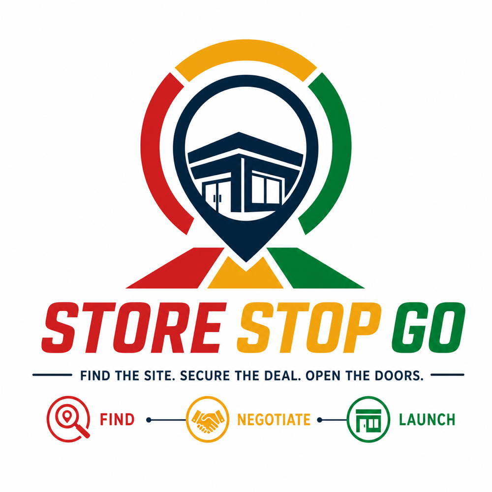
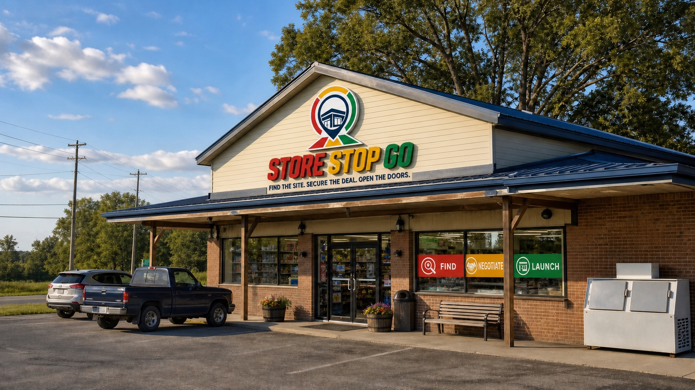

Stop-sign honesty
If a site doesn't score, we kill it fast and tell you why — even when the deal would've been easy money. A red light from us protects your next thirty years.

Behind every great roadside brand is a great corner — the exit ramp, the frontage road, the intersection everyone drives past twice a day. Finding those corners first isn't luck. It's our entire company.
Store Stop Go started the way most good site decisions do — behind a windshield. Our founder spent years driving interstate corridors for retail expansion teams and kept watching the same thing happen: the best corners went to whoever had the data first.
So we became the ones with the data first. Today our scouts, analysts, and dealmakers work as one team with a single deliverable: a location your brand can green-light with total confidence. We drive the corridors ourselves. We run our own traffic counts. And when the numbers say go, we buy the ground — so the only thing left for you to do is build.
We work quietly, we move fast, and we let the scorecards do the talking. That's how a company you've never heard of ends up behind stores you stop at every week.

Delivered 1.4M corridor miles logged to find corners like thisRoadside retail lives and dies on location. Get it right and the site markets itself for thirty years. Get it wrong and no amount of signage saves it. That's why the numbers come first — every time.
If a site doesn't score, we kill it fast and tell you why — even when the deal would've been easy money. A red light from us protects your next thirty years.
Clean terms, transparent diligence, no surprises at closing. Landowners shake our hand twice — once at the deal, once after it.
We're not chasing openings — we're compounding portfolios. A site should perform in year ten, not just look good on day one.
A single off-market parcel on a Texas frontage road proves the model: data first, deal second, build third.
Traffic, demographics, growth, and risk collapse into one number a real-estate committee can act on.
Scout teams go multi-state, following the interstates — I-35, I-10, I-40, I-75 — into the Sun Belt boom.
Twenty-three states of active coverage and a pipeline of corners your competitors haven't heard about yet.
Whether you're planning your next five stores or your next fifty, the conversation starts with a corridor.